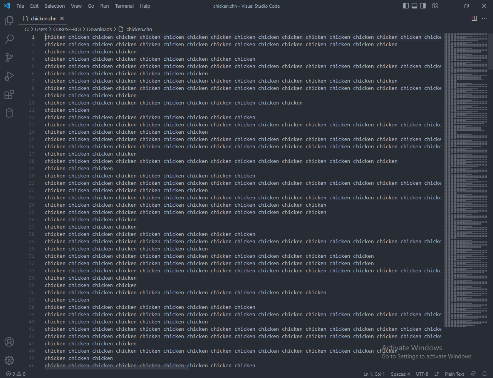
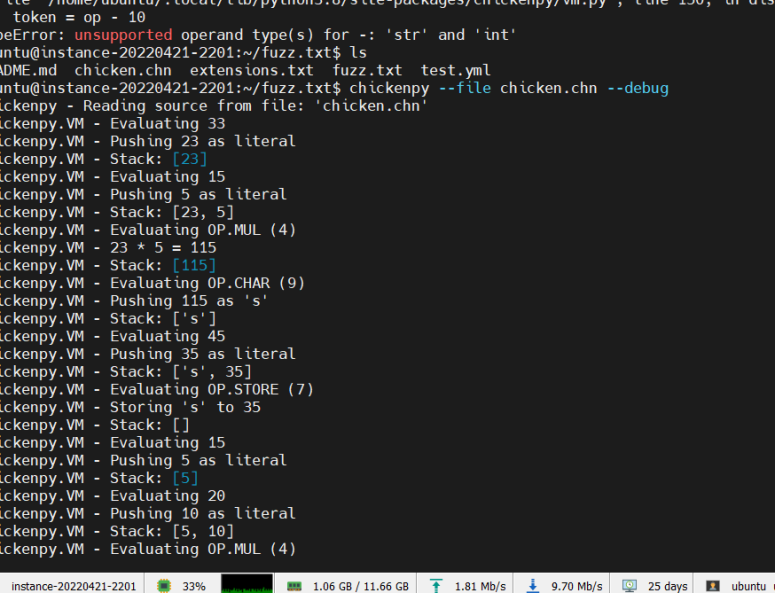
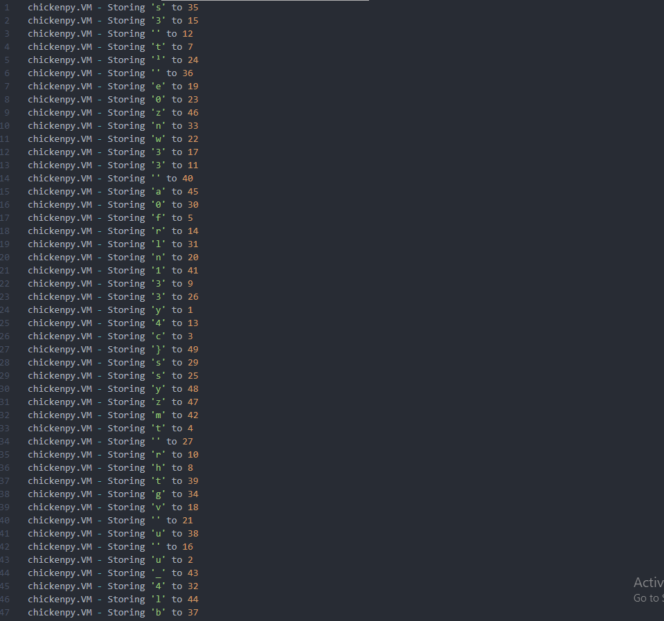

Category: Reverse Engineering
Level: HardChallenge
So I tried learning a new sorta-language, but I'm not very good at it and don't think I used it right. Can you check for me? and chicken.chn file
Solution
challenge provides file called "chicken.chn" chicken.chn

Opps, i don't know what is this chicken lol?..
so google is my friend at this moment, after searching in different ways i found that chicken esolang known as
(shockingly) [chicken](https://esolangs.org/wiki/Chicken).
each line has the word "chicken" written a certain number of times.
and that means when count the number of chicken on each line you will get a something called opcode Skip this part:
i searched for tool that can translate those lines to me automatically and i found a tool on github: [GithubTool](https://github.com/kosayoda/chickenpy)
Github Tool:
it translate the lines to be easier to read after i ran the tool and got the result was kinda easy to me to read it and arrange the flag
Result:

chickenpy.VM - Storing 's' to 35
chickenpy.VM - Storing '3' to 15
chickenpy.VM - Storing '' to 12
chickenpy.VM - Storing 't' to 7
chickenpy.VM - Storing 'ˡ' to 24
chickenpy.VM - Storing '' to 36
chickenpy.VM - Storing 'e' to 19
chickenpy.VM - Storing '0' to 23
chickenpy.VM - Storing 'z' to 46
chickenpy.VM - Storing 'n' to 33
chickenpy.VM - Storing 'w' to 22
chickenpy.VM - Storing '3' to 17
chickenpy.VM - Storing '3' to 11
chickenpy.VM - Storing '' to 40
chickenpy.VM - Storing 'a' to 45
chickenpy.VM - Storing '0' to 30
chickenpy.VM - Storing 'f' to 5
chickenpy.VM - Storing 'r' to 14
chickenpy.VM - Storing 'l' to 31
chickenpy.VM - Storing 'n' to 20
chickenpy.VM - Storing '1' to 41
chickenpy.VM - Storing '3' to 9
chickenpy.VM - Storing '3' to 26
chickenpy.VM - Storing 'y' to 1
chickenpy.VM - Storing '4' to 13
chickenpy.VM - Storing 'c' to 3
chickenpy.VM - Storing '}' to 49
chickenpy.VM - Storing 's' to 29
chickenpy.VM - Storing 's' to 25
chickenpy.VM - Storing 'y' to 48
chickenpy.VM - Storing 'z' to 47
chickenpy.VM - Storing 'm' to 42
chickenpy.VM - Storing 't' to 4
chickenpy.VM - Storing '' to 27
chickenpy.VM - Storing 'r' to 10
chickenpy.VM - Storing 'h' to 8
chickenpy.VM - Storing 't' to 39
chickenpy.VM - Storing 'g' to 34
chickenpy.VM - Storing 'v' to 18
chickenpy.VM - Storing '' to 21
chickenpy.VM - Storing 'u' to 38
chickenpy.VM - Storing '' to 16
chickenpy.VM - Storing 'u' to 2
chickenpy.VM - Storing '_' to 43
chickenpy.VM - Storing '4' to 32
chickenpy.VM - Storing 'l' to 44
chickenpy.VM - Storing 'b' to 37
chickenpy.VM - Storing '{' to 6
chickenpy.VM - Storing 'e' to 28
chickenpy.VM - Storing 'b' to 0